Bienvenue sur mon portfolio
Emmanuelle Nsossani
 Qui suis-je ?
Enchantée, je suis Emmanuelle.
Durant mes années de lycée, j'ai développé une passion pour le monde du numérique. Étant
musicienne
depuis quelques années, me diriger vers un domaine créatif était pour moi une évidence.
C'est
ainsi
que je me suis tournée vers le web design/développement.
Je suis aujourd'hui étudiante en BUT MMI à l'IUT de Sénart/Fontainebleau, où je continue
d'acquérir
des compétences dans ce domaine en plus de mon apprentissage personnel.
Qu'est-ce que but mmi ?
Le Bachelor Universitaire Technologique est une formation se déroulant en trois dont
l’enseignement se divise en trois grandes parties :
-> création numérique : infographie, audiovisuel, animation
-> web : intégration, développement
-> communication : marketing, gestion de projet